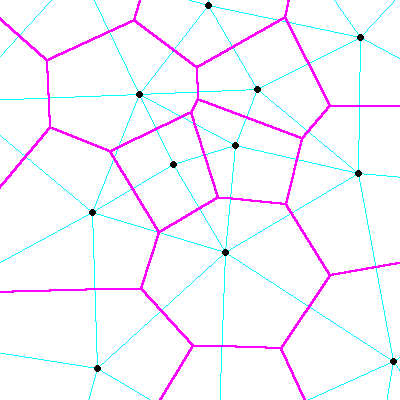
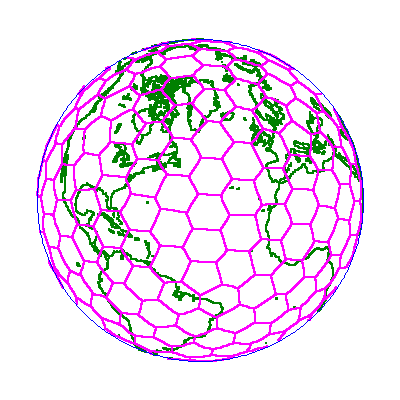
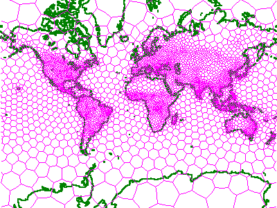
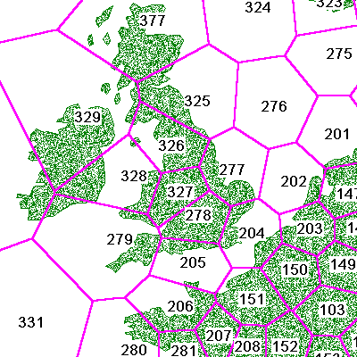
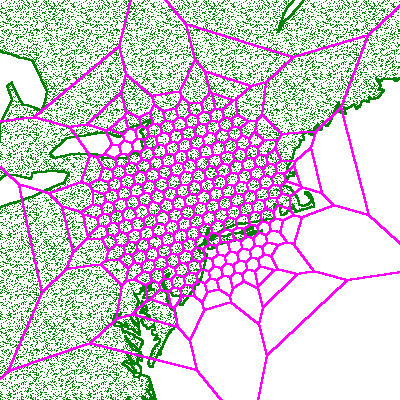
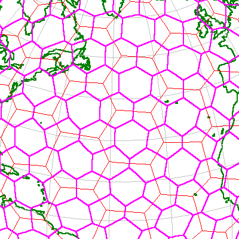
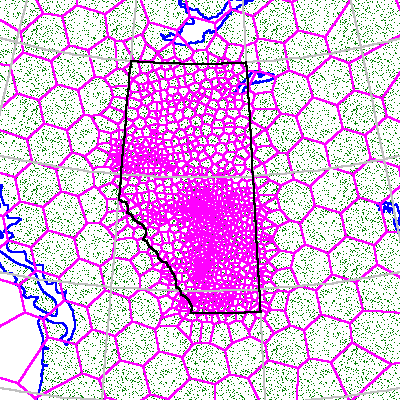
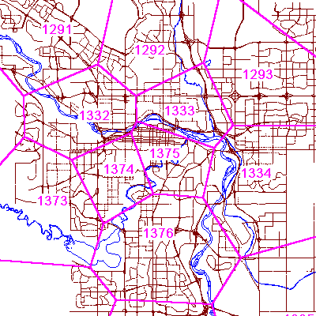
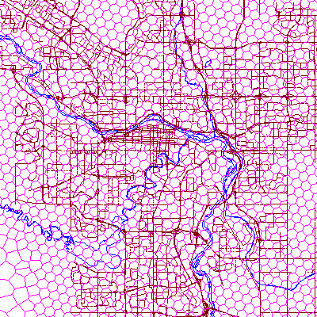
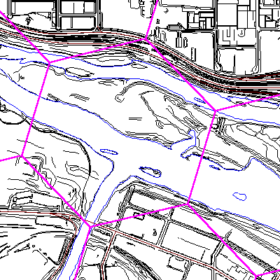

The purpose of this chapter is to provide information about Voronoi cell structures and their importance. In particular, we will show you how to construct your own Voronoi cell structures. Performance issues are identified.
Good question! You might think that if you had a good model of the Earth and you knew your coordinates, you would need little else. While this might be true if you had incredible amounts of data storage and unlimited amounts of processing power, the reality is that you must carefully steward both of these resources. One of the techniques that helps you become an efficient consumer of computing resources is the technique of indexing.
Most of your data comes to you with some inherent distribution or "clustering". If you can develop an index that exploits this natural clustering, your searching processes become more efficient.
This is an easy concept to grasp for non-geographic data. For example, an automated telephone book is usually a database of subscriber names, indexed alphabetically by the first letter of the last name. In this example, you use the alphabet as your guide to searching. An index on the first character of the last name restricts the searching to smaller, more manageable groups. In other words, to find a certain "Smith", you do not have to bother looking in any other groups other than the "S" group.
On the two-dimensional surface of the world the problem is much more difficult. To cite an extreme case, if you indexed your data by latitudes alone, you might have to inspect all your data by longitudes to find the specific data you wanted. Or vice versa. To go back to the telephone book example, you could index by surname or by first name, but not both at the same time.
Fortunately, there now exists a solution to this dilemma.
You can now use a Voronoi subdivision of the Earth's surface to divide up your data into smaller, more manageable "patches". You can use this subdivision as a guide in your searching. We call each of these smaller, more manageable "patches", a "cell".
You can build any number of different Voronoi subdivisions. Each one can be based on a different premise.
For example, your Hipparchus SDK includes a specific Voronoi cell structure that subdivides the Earth's surface into about 2500 or so smaller areas having approximately equal human population. ( This is WORLDW32.VIX) For areas on the Earth's surface where there are many people, there are many small cells. In the nether regions of the planet, where fewer people reside, there are fewer, but larger cells.
We have supplied this particular Voronoi cell structure with Hipparchus because, all other things being equal, it is people that generate data. Where there's lots of people, there's likely lots of data; where there's not a lot of people, there's not likely a lot of data.
A second supplied Voronoi cell structure divides the Earth's surface into a number of cells of roughly the same area (ISOTYPE). You might use this structure in a situation where you had a worldwide database of atmospheric measurements, more or less regularly spaced. You could also use this structure (consisting of some 272 cells) as a starting point for your own structure, further subdividing it in accordance with the expected spatial distribution of your own data.
The ability to determine a "coarse" or approximate location of your information by finding its "containing" cell allows you to speed up your search process. Once you have located the general area of interest, you can use other data attributes for the "fine" or detailed selection of data. Some applications only require "coarse" indexing. For the purposes of this tutorial, we will refer to the "coarse" location of a piece of data as the center point of the cell containing the data.
In working with information relating to the surface of the Earth (for example, population, resources, etc.) you soon realize that there are more dense concentrations of certain objects in some areas than in others. In other words, you have to deal with more data about some areas (where there are many objects of interest) and less data about other areas (where there are fewer, if any, objects of interest).
The problem is analogous to developing a payroll system in Scotland and attempting to index the objects (i.e., the employees) by the first letter of their last name, only to discover that almost all of the names begin with the letter 'M'. For indexing purposes, you will have most of your eggs in one basket and your searching performance for most names will be less than exemplary. In Scotland, you would need another way to subdivide the information.
Historically, geographic information system designers have linked the indexing challenge to the ages-old quest for a finely-divided regular tessellation of the Earth.
It is a little-known fact that one cannot partition the surface of a sphere by creating a regular tessellation having more faces than those defined by the five Platonic solids. These are:
Any of these could be used to subdivide the surface into regular shapes. For example, you could grossly approximate the shape of the Earth as a cube. In this case, each of the six faces of the cube would be a square. You could subdivide this square into smaller squares, numbering each "cell" to develop your index. The problem of course is that a cube model of the Earth is totally unrealistic.
If you move up to a dodecahedron (a solid figure with twelve plane faces, each a pentagon) you will produce a model of the Earth that has twelve sides - better, but still an unrealistic model. It will still not subdivide the Earth finely enough for any practical use. For example, all of North America would be represented by only two faces of this model.
You might go on and consider use of the icosahedron, but you're not significantly ahead. Twenty faces will still not do the job.
Going beyond the five Platonic solids does not help. Plato (a mathematician as much as a philosopher) tried using simple polygons and eventually recognized the challenge.
Knowledge of this impossibility was periodically lost. In building the St. Lawrence Dome of Florence, Michelangelo tried with triangular faces, but he too found the limitations.
The amazing Buckminster Fuller understood the problem from the outset but nevertheless produced his "geodesic" dome. He did this by compromising. He specified the faces of his dome to be of differing shapes and sizes.
In the computer age, the quest to find a regular tessellation of the Earth has been far from academic. The idea has been that if you had such a grid, you might be able to come up with a formula that could directly transform a point's coordinates into a multi-level disk address. This would then get you directly to the specific "bit bucket" that contains data about the point.
Although much has been written on this subject, most investigators have come to accept that a regular subdivision of the surface of the Earth is not possible - all attempts so far having proven fruitless.
So what are the alternatives?.
For indexing purposes, if you were to abandon the regular tessellation idea and deliberately move towards an irregular tessellation, you might assume that you would encounter both good and bad.
The major gain would be your ability to match each cell size with the density of the associated data. The major loss would be an easy formula for locating the bucket containing an object based on its global position coordinates alone. In other words, you could develop an index that was matched to the natural spatial distribution of your data, but you could expect significant additional complexity and computing inefficiencies in finding that data.
But are these assumptions actually justified?
Consider next the contribution of Voronoi.
The Russian mathematician M. G. Voronoi was the first credited with the description of an interesting irregular tessellation of the plane.
He observed that using elementary "ruler and compass" geometric construction, you could divide a flat surface into a network of polygons having very significant properties.
Voronoi observed that if you took an arbitrary set of points on a flat surface (such as a map), and you connected certain points with a straight line, and you then drew the bisectors of these lines, what you got were polygons enclosing each point.
Even though there might be a potentially very large number of point connector lines, their bisectors formed "horizons" around the points such that a relatively small number of bisectors formed convex polygons surrounding each point.

Figure 7 illustrates a number of Voronoi polygons and some of the geometry used to construct them.
These irregular figures on the plane are called Voronoi polygons. Once constructed, they have this significant property:
A point that falls within one polygon will, by definition, be closer to the center point of that polygon than the center point of any other polygon.
Put differently, once you have defined such a polygon, all of the objects closer to its center than the center of any other polygon can be considered to be exclusively "owned" by that polygon.
This provides an informal definition of the Voronoi polygon. It is useful to note in passing that its center point is distinct from its centroid. For more precise definitions, refer to Appendix A: Glossary Of Terms.
Voronoi published his observations near the turn of the last century. Others (Theissen, Delaunay, Dirichlet) have extended his observations and applied them for practical use by geographers and other map users.
Now back to the story line.
If you were hunting for an irregular tessellation of the round Earth, you might think of Voronoi polygons. Could they somehow be wrapped like a fish net around the entire surface of the Earth, defining an ellipsoidal Voronoi-like polygon structure with properties analogous to its planar form? If so, could they serve as a spatial index?
In the development of Hipparchus, the investigation of this possibility was combined with the development of a vector algebra for ellipsoidal geodesy. There were at first unsubstantiated indications that the assumed disadvantages of the irregular tessellation approach could be minimal and that the advantages significant. The resulting product now speaks for itself.
Because of its parallel with what was described by Voronoi, we call our global spatial index a Voronoi cell structure and we call the individual "polygons" Voronoi cells, or just plain cells.

Figure 8 shows an orthographic view of a simple Voronoi cell structure, illustrating the fact that it surrounds the entire Earth.
Voronoi cell structures are central to the entire fabric of Hipparchus.
As an aside, when you look at one of these cell structures, you may be reminded of the appearance of biological cell structures as seen under a microscope. The next time you are at a zoo, consider the pattern on the neck of the Reticulated Giraffe. Hasn't Mother Nature a fascinating way of anticipating our view of things?
First (and foremost), you need only the coordinates of the cell center points and lists of their neighbors to completely define the entire cell structure.
You need only these coordinates to determine the geometry of the cell boundaries. So there is no need to store the boundaries. If you ever need to display them, you can generate them "on the fly". (In most other irregular grid systems, such as quad trees, you would be forced to store (and retrieve) the coordinates of the corners of the "bounding boxes").
You can build any number of different Voronoi cell structures. Ideally, each one you build will reflect the natural geographic distribution of your application data. For efficiency, a greater density of data points in an area should be matched by a greater density of cells in that area. Figure 9 illustrates a population-related Voronoi cell structure coverage of the world (in the Mercator projection).

If the density distribution of your data changes over time, you will be able periodically to restructure its cell index.
Note that if your data is static, you might never need to adjust your cell structure. One cell structure may suffice for the life of the application data. This could apply also to applications using periodically updated static databases such as those distributed on CD-ROM media.
As a rule of thumb, the number of cells in your structure should be three to four orders of magnitude less than the number of points that will be indexed by that structure. For example, if you are working with a database of a million point positions, you might effectively deploy an indexing structure of one thousand cells.
In the context of Voronoi cell structure, you need only know the coordinates of a given point to determine its "home" cell. To find that cell, you must calculate the distance of your point from the center points of all the cells in the structure. Your point will belong to the cell whose center point is the shortest distance from that point.
On the face of it, this procedure suggests an unacceptable amount of calculation. However, using the vector algebraic approach plus some of the heuristic principles of virtual memory management, Hipparchus starts the search with the home cell of the previous point addressed and then goes on from there to locate the new home cell.
Knowing the "neighbors" of a given cell would obviously be very useful in the search process. It should be no surprise then that Hipparchus knows all about a cell's neighbors. For each cell, Hipparchus has already built a list of neighbors. On average, each Voronoi cell has about six of them.

Figure 10 shows a somewhat closer view of the previous population-related Voronoi structure. Note that each cell carries a unique identifier, a simple integer. Application data elements assigned to cells will associate with this identifier.
Now that you know the basic geometry of Voronoi cell structures, you need to know how to select one for your specific requirements.
You have at least five options in selecting the appropriate cell structure for your application:
We will next investigate each of these options.
The Hipparchus SDK includes three ready-to-use Voronoi cell structures.
ISOTYPE is a basic structure that is based on a dodecahedron model of the Earth that has been "harmonically decomposed" three times to provide higher resolution. This structure consists of some 272 cells of approximately equal area. It is suitable "as is" for global physical models not requiring a great deal of data.
WORLDW32 is a structure that is related to the population densities of the world. It consists of nearly 2500 cells of sizes somewhat inversely proportional to the human populations in the areas. It is useful "as is" for global applications that work with data associated with human activity, but in relatively small quantities.
USAW32 is a structure that is related to the population densities of the USA and its territories.
To assist in the rapid deployment of your application, Geodyssey offers a collection of pre-built Voronoi cell structures for these and other parts of the world at varying densities. These may be viewed and freely downloaded from our website repository.
Additional sources for ready-made cell structures would include other applications that address similar data. Since Voronoi cell structures are independent of specific application data, they can be exchanged easily between applications, and even between computing platforms.
However, if your application is new, uses a lot of data, or is geographically localized, you will likely want to develop your own structure. This need not delay you. For development purposes, you can get started with one of the supplied structures and replace it later with your own.
If you are developing an application that deals almost exclusively with information about a specific local area such as a municipality, then you will likely need to augment one of the supplied global cell structures with a large number of small cells in the vicinity of your application area.
If this is the case, you might run the Hipparchus Utilities: CELLPTS, CLUSTER, CELLCAT and CELLWVS against the minimal structure ISOTYPE to produce a new structure having the desired density of cells in the specified localities, but sparse cells elsewhere.

Figure 11 illustrates just such a structure for an application with spatial data centered in the lower New York state area.
If your data is geographically distributed with the same relative distribution as that implied by an existing Voronoi cell structure, but is far too voluminous to be effectively indexed or manipulated using that structure, then you can "harmonically" divide the existing structure to provide another having approximately three times the number of cells, but the same relative distribution.
You do this by running the Hipparchus Utilities program CELLPTS with the "add corner points" option, followed by CELLWVS.

Figure 12 illustrates the first harmonic subdivision of the ISOTYPE structure.
If you wish to adapt one of the initial cell structures to your needs, and none of the above procedures seems appropriate, you can follow the steps outlined below:
The actual operation of this program is described in detail in the Hipparchus Utilities Guide. Here we will only discuss what is meant by "influence".
Using the densification method of cell structure modification, you do not specifically select cell center points. Instead, you provide the CELLDNS program with a "representative" distribution of "for instance" data locations. You also specify the maximum number of these representative data elements that any cell should be forced to contain. On this basis, the program tallies cell "hits" and keeps dividing cells until all would contain at most the maximum specified representative points.
Hopefully, the relationship between the total number of representative data locations and the maximum number per cell will reflect what you expect in real life. The actual amount of representative data you use in this process can only affect the precision of your data distribution forecast. Time permitting, you conceivably could use your whole location database as input to this process.
For example, for an extended CITIES application, you might start with the WORLDW32.VIX cell structure and influence it with locations of specific manufacturing facilities and more precise demographic location data. This would be appropriate for an application that does market penetration analysis for products targeted at consumer markets.
In another example for a Western Canadian petroleum application, you could start with ISOTYPE and influence it with the location of every oil well drill site in the Province of Alberta. This procedure would approximate the information density associated with the Alberta oil and gas industry (for example, pipelines, exploration leases, roads, drill sites, etc.). The oil well drill site points will not themselves become cell center points. Instead, the site locations are used to influence the creation of a new structure of cells. Figure 13 illustrates the intricate cell structure obtained in this manner.

If you were to zoom in on any of the more dense areas, you would see a precisely defined structure having zero-width imaginary cell boundaries. Figure 14 shows this view in the vicinity of the city of Calgary, Alberta, Canada.

In yet another example, a municipal engineering application, you could start with ISOTYPE and influence this structure with the survey control points for the municipality. These will often reflect the density of information in the municipality (for example roads, sewers, power lines, population, traffic, etc). You would end up with a highly localized structure that still met the requirement that all cell structures be global in their coverage (see Figure 15, following).

Nevertheless, each of these small cells serves to efficiently classify the relatively large amount of spatial data available for the locations. Figure 16 (following) illustrates some aerial survey data in the neighborhood of the Calgary Zoo.

The process to custom-build your own cell structure is deceptively simple. Just follow these steps:
Of course, the more difficult part is in deciding on the list of cell center points! There are a number of important factors to be taken into account. These are discussed at length in Chapter 12: Advanced Topics. We recommend that you defer this option until you are more familiar with the relationships between a cell structure, your geographic objects and the Hipparchus Library functions.
For the moment, suffice it to say that once you know where your cell center points are to lie, actually constructing the Voronoi cell structure is easy.
In most cases, you will need only one cell structure for your application. For example, in a Texas petroleum application, you might use the well drill site locations to develop the cell structure. This data is clustered nicely such that over 75% of the wells are located in the southeastern half of the state. Hence, you might find perhaps 500 wells in a 10 square mile area near Houston and less than one well per 10 square miles near El Paso to the West. You will likely use this natural data clustering to develop your Voronoi cell structure.
In some cases, however, you may want to have more than one cell structure available to your application. This could be the case if your application works with multiple "themes". Suppose, for example, that in addition to the petroleum theme, your application had grain transportation as another theme. Then you could be working with the locations of grain elevator facilities and branch rail lines. You might opt to index your data about these grain transportation facilities under a second Voronoi cell structure.
Now, if your application were to try to combine or compare geographic information from both themes, you would need to have both structures defined simultaneously.
Hipparchus allows you to do this. With each Hipparchus function call, your application passes a reference to the appropriate cell structure.
You must remember that to calculate the logical intersection or union of any two objects, both objects must be represented in memory under the same cell structure. It is an easy matter to move an object from one cell structure to another before performing a logical operation. See the functions for local to global conversions h6_CellToGlobal and h6_GlobalToCell in the Hipparchus Library Reference Manual.
Working with cells, it is important to recognize that there are some important "do"s and "don't"s to be considered. The most common are these:
For more information about these admonitions, consult Chapter 12: Advanced Topics.
Voronoi cell structures are the key to indexing your data. For a quick start, you can use one of the supplied ready-to-use cell structures. However, if none of these are directly usable, you can easily modify one of them to create your own cell structure. If necessary, you can custom-build your own structure. You can have multiple structures in use simultaneously. We have made a number of general recommendations that should help you when working with cells.